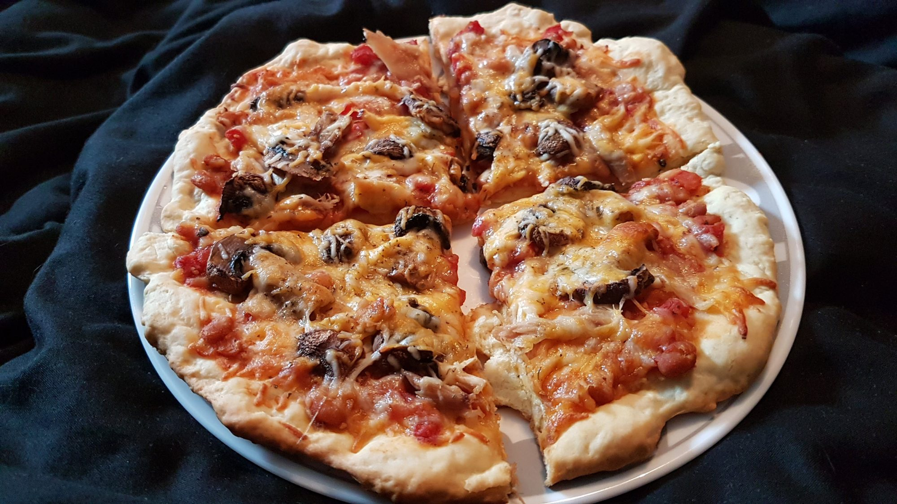

Pizza crust recipe

Description
A tasty, quick pizza crust that uses no yeast.
Ingredients
- 1 ⅓ cups all-purpose flour
- 1 teaspoon baking powder
- ½ teaspoon salt
- ½ cup fat-free milk
- 2 tablespoons olive oil
Steps
- Mix flour, baking powder, and salt together in a bowl; stir in milk and olive oil until a soft dough forms. Turn dough onto a lightly floured surface and knead 10 times. Shape dough into a ball. Cover dough with an inverted bowl and let sit for 10 minutes.
- Roll dough into a 12-inch circle on a baking sheet.